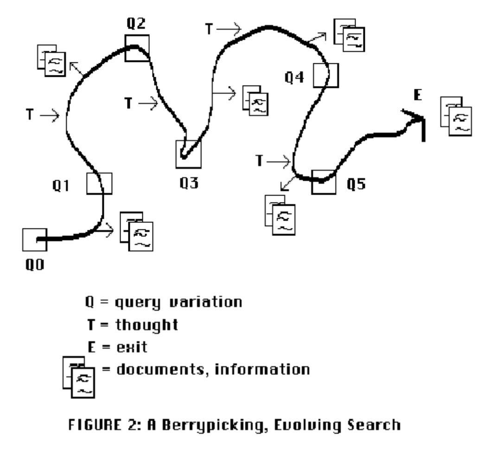
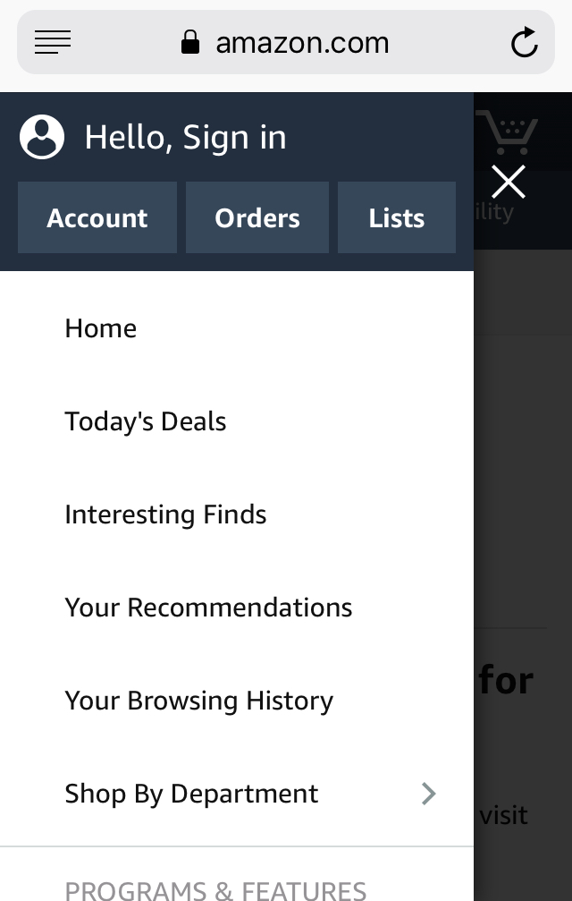

An immersive user experience breaks down the consumer's defenses.
We analyze how various design aspects of the webpage have changed over the years to improve immersive shopping experience by applying the berrypicking model. These aspects demonstrate high degrees of intuitiveness and seamlessness, and make consumers more receptive to the company's agenda.
Table of Contents
Preface: Matthew Effect
“Matthew effect” describes that in search engines, the most pertinent and factual information is hidden on the second page. Matthew effect is prominent in online review helpfulness voting across search, experience, and credence product categories. During the gold rush age of e-commerce, Amazon was the first mover to accumulate and expand user base because of “Matthew effect”, which contributed to its success. It is designed to distract shoppers, like the long endless aisles with various special deals in a physical supermarket. It pushes users down a different search path in their “berrypicking” process. In the images above, we see that Amazon is very careful about what they show and what they don't show on the front page ads. The lack of price information prompts the user to "browse" the store.
Berrypicking
The berrypicking model of information retrieval proposes that we view searching as a constant feedback between the search tool (in this case the website) and the user. Retrieval can be piecemeal, and each act of user feedback not only refines the machine output, but also modifies the user's cognitive model of the inquiry. Here we analyze 5 different aspects where Amazon applied this model to provide immersive user experience.
1. Kindle's Cross-Section Promotion

Amazon cross-promoted kindle over all top 3 departments (Books, Digital Downloads and Electronics & Computers ). This practice corresponds to principle of area scanning technique from the berry picking method. This arrangement expanded promotional coverage of the item and consequently increased user’s searching speed.
2. Image-Oriented Formatting
Left: 1999 front page ads show cluttered text and some images. Right: 2019 front page ads feature sleek design and minimal but bolded text. Shop categories have been hidden.
According to the paper The design of browsing and berrypicking techniques for the online search interface by Bates, berrypicking technique requires highly realistic screens: the design for the screen should be easy and intuitive for data retrieving processes, such as reading and scanning. Compared with Amazon’s earlier versions, where the hompages were mostly clustered with text, in 2007-20011, Amazon’s homepage started to insert more images as illustrations. This reduction of content and improvement of quality allowed users to apply berrypicking technique to scan the site more efficiently.
3. Rethinking The Header
Layout freedom and the site’s ability to subtly emphasize content were very limited in early stages of Amazon development, as Cascading Style Sheets (CSS) had not been released. There was very little room for efficient organization of page content, emphasis, and clarity. In the original 1995 site, there was no distinguished header. In the 1999 site, headers served no function other than linking to other sites through clicking.

The redesign in 2012 offered a very large amount of white space around and between categories of product advertisements and an enlarged search bar to improve findability in navigation between discrete items. It also offered visual resting space. It also colored text of headings for categories and included a shop by department button in the top left region, increasing user control by increasing user search options with what is often referred to as a lobster trapping search.
In 2014 Amazon further enlarged its search bar at the central position of the header.
In its 2016 version, along with the orange magnifier icon, the strong contrast between the white input bar and dark background better emphasized the presence of search bar, and consequently enhanced the accessibility of the homepage’s search function.
The concentrated design of the 2016 version page header closed the ring for the sequence of “search (the ‘search bar’), purchase (the ‘cart’ tab), track (the ‘orders’ tab) and follow-up services (the ‘help’ tab). Such compact design of the header concentrated all basic features and functions a shopper needed from this site. And such arrangement of tabs increased the searchability of demanded products and accessibility of necessary functions of the site for the users.
4. Device-Responsive Layouts
In 2012, Apple released its iPhone 5 and its pre-order demand topped two million in first 24 hours. A year later it released iPad 2, and had sold out in Hong Kong with the first two hours after it became available for online orders. Both events foreshadowed the coming wave of explosive demand for smart mobiles.
During the most recent five years, Amazon adjusted its homepage design and evolved to its current form in order to better serve the mobile and tablet users. Amazon adopted elements of responsive web platform, so even the non-app users could still enjoy shopping through its mobile sites, as the sites automatically fit the screen well. Amazon also allowed the mobile user to switch between the mobile and full sites. The aforementioned reduction of text and increased use of images also contribute to this.
One major change in its current web layout, started from its 2014 version, was the horizontally arranged product images and promotions. Products are listed horizontally so that it could fit norms of navigation for tablets and phones: people mostly swipe the screen horizontally when navigating through mobile or tablet sites.
5. Recommendation Algorithms
Amazon used recommendation algorithms to personalize individual online shopping experiences and platforms. In 2006, Amazon introduced recommendation feature for personalizing shopping experience. Amazon added sections as “People who looked at this went on to buy…” and “Recommended based on your browsing history”, which involved a simple algorithm that pooled all the consumers that have purchased an item purchased by the user. Then, assuming that they must have similar taste, Amazon recommended other items purchased by the pool of consumers.
Amazon later refined their recommendation algorithm by using an Item-to-Item Collaborative Filtering algorithm. The algorithm builds a list of similar items by finding items that customers tend to purchase together and then create a product-to-product matrix by iterating through all item pairs to get a similarity metric for each pair. A common metric is the cosine measure, where each vector corresponds to an item, instead of a customer. Given such table, the algorithm finds items similar to each of the user’s purchases or rated items, and then recommends the most popular or correlated items based on iterated metrics gained by computation. The computation only depends on the number of items the user purchased or rated.
Such algorithm was effective and rather efficient compared with some traditional search methods (cluster models, and search-based methods etc. ) And this particular algorithm is also scalable so that it can fit the large data pool for Amazon to responsively generate compelling recommendations for all individuals.
You can read more about it here.